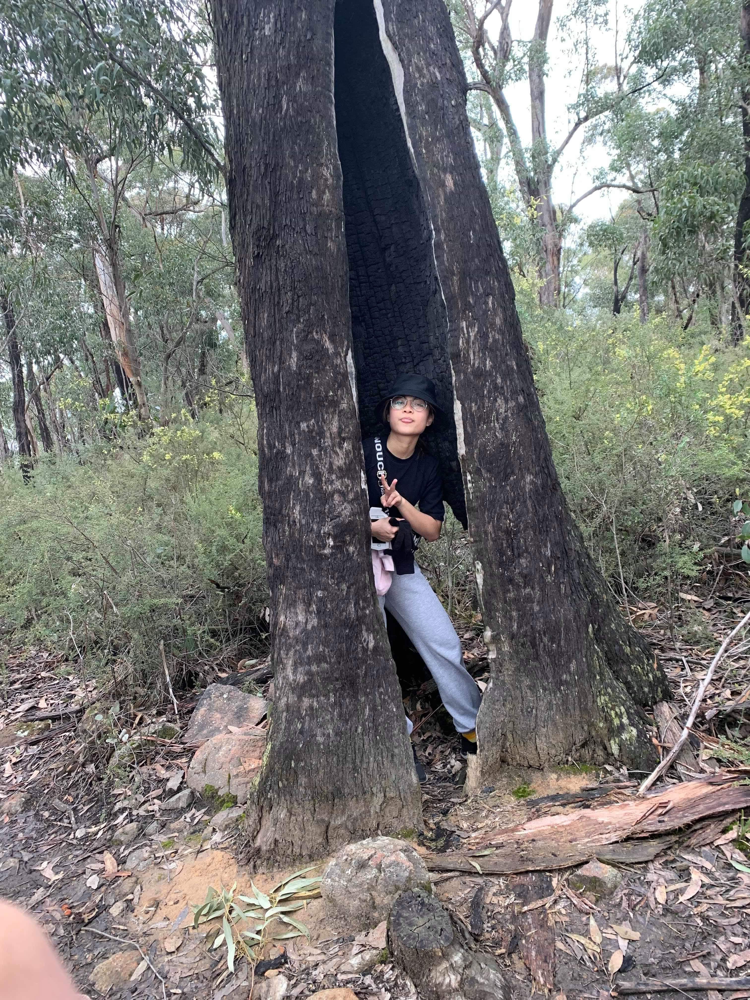
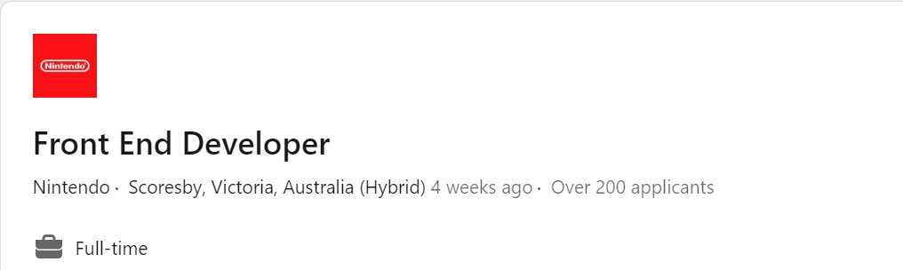
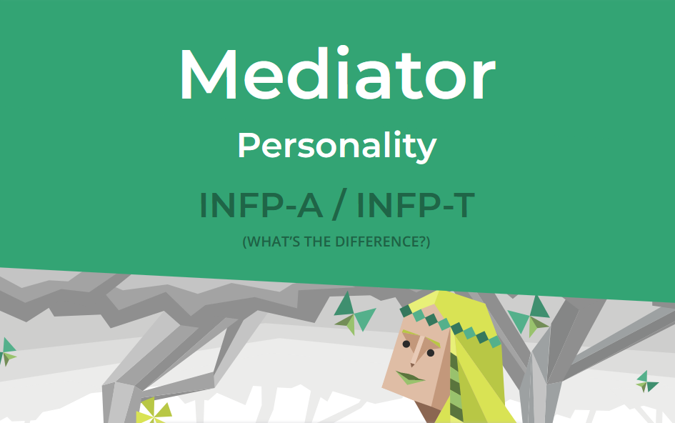
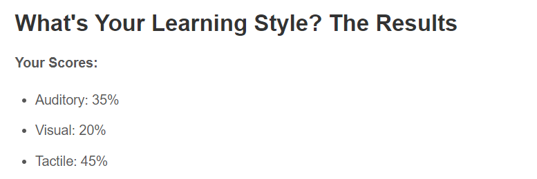
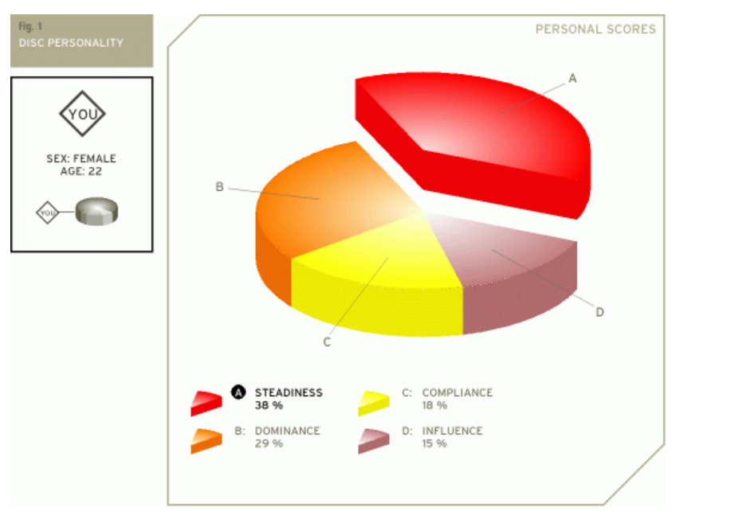

My name is Amani Zafirah Mohammad Anwar. It has been 13 years since
I have migrated from Singapore to Melbourne and have felt most comfortable here the most.
I am currently doing a Bachelor of IT but I have been working in this field for a bit over a year now.
More about me, I am bilingual speaking both Malay and English at a proficient level.
One fact about me is that I enjoy going on adventurous hikes with friends.

My interest in IT started right after joining the field of IT at the end of 2021. I was an IT technician for a few months as a contractor for the ATO, then moved into a similar role at the University of Melbourne.
Usually, I do enjoy technology but never have I thought that it would be something that I enjoy in terms of a work life. IT in itself is such a broad field that can range from my job as a technician to a web developer. My experience of IT is quite basic with
hardware and software, but it has definitely made me more technically savvy.
I chose to join RMIT because of the institution’s high reputation in its IT subjects. Additionally, the university has an online option which suites my schedule of having a full-time job. Its convenience and high reputation in IT is most likely the reason
students have chosen to study at RMIT. With choosing to study at RMIT, here are the 3 main skills I would be keen to learn: web development, Python and design. Elaborating on web
development, HTML and CSS will be the foundation on starting the journey of web development. Furthermore, to develop my knowledge on coding languages such as Python would aid in my interest in web design. Lastly, the design part of combining
HTML and aesthetics when building websites will be a challenge to learn because of its creative aspect.

https://www.linkedin.com/jobs/view/3359682603/?alternateChannel=search&refId=bbfqw7PWhuDwVS1hQ8KUEg%3D%3D&trackingId=%2FxtAc2qWzwIXK%2FEyjGokXQ%3D%3D
Here is an advertisement of a job application that would be ideal for my interests. The front-end developer position involves working with the Digital Performance team on the development and maintenance of the Nintendo Australia website. The individual will be responsible for coordinating updates to the website as well as being involved in coordinating digital projects, collaborating with global teams on project rollouts and strategy, and reviewing the performance digital projects. In addition, the individual will be responsible for ensuring that all executions meet the company's legal and ethical standards and that all deadlines are being met. As a career, being employed as a front-end developer for Nintendo certainly appeals to myself but it would be to many others. The employer, being Nintendo, provides any of its employees with a substantial amount of credibility because of its well-known name. Moreover, the position highlights the importance of implementing creativity and technical skills to design and improve the user interfaces for its website which I would be keen on being involved in.

The requirements of the front-end developer position starts off with at least 2 years of front-end development experience, as well as strong proficiency in front-end languages such as HTML, CSS, and JavaScript. Experience with frameworks like Vue and Nuxt is also required. The candidate should have strong experience working with enterprise-level content management systems and tools, and a strong understanding of the software development life cycle, including code reviews and testing. Knowledge of Adobe CC, such as Photoshop and Illustrator, and understanding of Google Analytics and web-based performance tracking are also desired. The candidate should have an undergraduate degree or formal training in a relevant field.
Currently I am working as an IT Consultant with over a year of experience in IT, where I am assigned inbound calls and make outbound calls when necessary. I am also a part of the software licensing team that procures software for staff at the university and handling multiple quotes from vendors to organise the purchase of software through the university. Being familiar with the use of Active Directory and Command Prompt to resolve issues end users are facing and assist end users with basic troubleshooting steps for hardware, software, and network issues via remote applications such as SCCM and TeamViewer. Additionally, maintaining an up-to-date knowledge of Windows and Mac Operating systems and applications such as Office365, Zoom, Cisco Jabber, and Cisco AnyConnect. Moreover, collaborating with teams such as the Digital Workplace team to further improve user experience with applications such as Sharepoint and Onedrive especially.
The plan to obtain the skills, qualifications and experience for the front-end developer position is to first complete a degree in Information Technology at RMIT it requires formal qualifications. Secondly, to gain 2 years of experience in front-end developing by engaging in internships in the field. On top of this, being proficient in front-end languages and focusing on HTML, CSS and Javascript because these are the technical skills essential to the job description. While these skills will be done alongside the bachelor’s degree, extra studying can be accomplished by self-creating websites or projects on the side.

The personality trait INFP (introverted, intuitive, feeling and perceiving) is my result for the Myers-Briggs personality test. Looking into the INFP trait, they tend to be sensitive, creative, and compassionate. Focusing on the creative characteristic, this is an advantage when engaging in group work as it provides the team with a creative perspective forming ideas. On the other hand, even though individuals who are a part of the INFP group are found to possess compassionate and caring qualities, the test emphasises they are most comfortable working independently than in a group setting. While this might be true, it highlights that people of this trait should find the opportunity to work in a team to improve themselves in this area. On a positive note, being a part of a team, they can showcase their mediation skills to assist with any future conflict that might arise. On a whole, being an INFP offers any team a great deal of advantages and disadvantages but it is how the individual themselves work around those disadvantages to overcome any endeavours.

Another test result is from the learning style test which splits into three distinct types: auditory, tactile, and visual. After being assigned as a tactile learner, the test informs that I learn the best with hands-on experience and physical activities. A handicap that may appear as a tactile learner is communicating ideas through online platforms. As online platforms are an easier way to communicate group work, it can be challenging to comprehend certain concepts just by messaging a team instead of face to face. A way to eliminate this issue is to suggest scheduling team meetings on a Zoom call or any platform that can be in a group call. This is to engage a tactile learner to grasp any complicated concepts with questions that can be answered by the team together.

The last test result is from the DISC personality test that assesses an individual’s personality and behavioural style into four styles: dominance, influence, steadiness and compliance. My test results produced a score of 38% in steadiness, 29% in dominance, 18% compliance and 15% in influence. With steadiness being at the top, it indicates that the individual tends to be reliable, patient and consistent in their behaviour. People with a high level of steadiness may be calm and patient in stressful situations and may be able to maintain their composure even when facing challenges or changes. While also being able to maintain a strong composure under pressure, it works in favour when dealing with group work when stressful issues appear.
Considering the three test results (INFP, tactile and steadiness), here are the factors that I would need to look out for when forming a team. The first factor is to initiate an introduction within the team to create a solid foundation eliminating the any fears to consult in each other about future project issues. Secondly, setting small goals and due dates to reach the final outcome in terms of group work. This ensures that everyone is contributing and is on track with the group work but will always emphasise that if anyone is in need of help with the work to comfortably contact the members of the group. Lastly, my flexibility means that I am able to adapt to many different types of groups that I may join. Thus, forming the actual group is not as important as adapting to the group that I already am in.